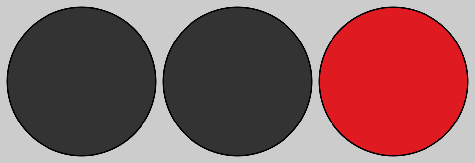
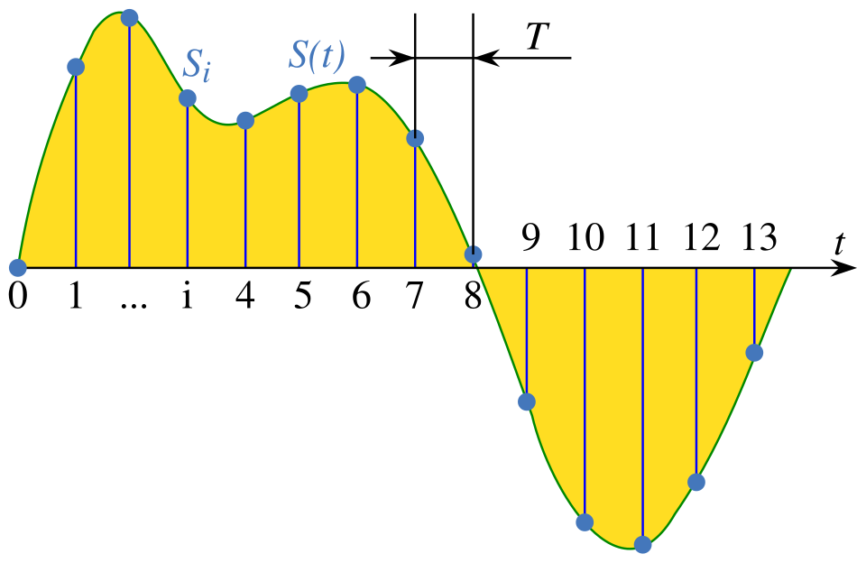
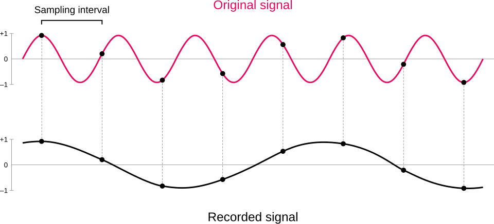
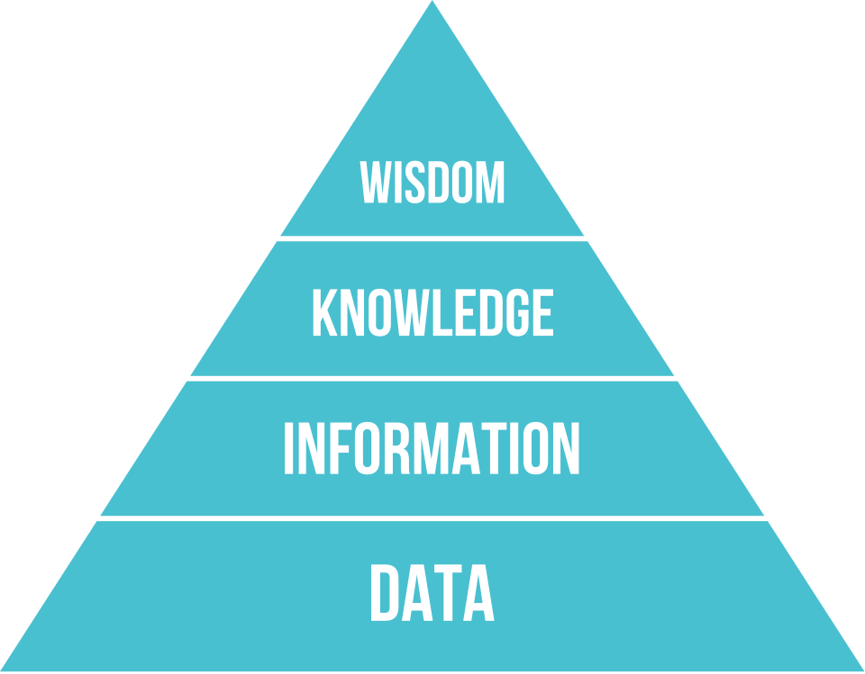

Wolfgang_Hasselmann
Wolfgang_Hasselmann
Good morning!
Nur das Schöne wird die Welt retten!
Fjodor Dostojewski
Nicht verzagen, Doc Alvers fragen!
Informatik — Grundkurs 11
Vom Signal zur Information
Signal, Nachricht, Information, Daten — und wie aus der Welt Bits werden
Nicht verzagen, Doc Alvers fragen!
Kapitel 01
Vier Begriffe, eine Kette
Signal, Nachricht, Information, Daten

Nicht verzagen, Doc Alvers fragen!
Wo wir stehen
Lernbereich 1 ist geschafft — von der Rechenuhr bis zum Mikroprozessor
Heute beginnt Lernbereich 2: Persönliches Informationsmanagement
Zuerst die Wörter, mit denen die Informatik arbeitet — im Alltag gehen sie wild durcheinander
Leitfrage: Speichert ein Rechner Daten oder Information — und ist das dasselbe?
Nicht verzagen, Doc Alvers fragen!
Die Begriffskette an der Ampel
| Begriff | Was es ist | an der Ampel |
|---|---|---|
| Signal | der physikalische Träger der Nachricht | das rote Licht |
| Nachricht | Zeichen, nach Regeln zusammengesetzt | „Rot“ im Code der Ampel |
| Information | die Bedeutung für den Empfänger | „halten!“ |
| Daten | Zeichen, festgehalten zur Verarbeitung | Schaltprotokoll der Ampelsteuerung |
Die Kette gilt überall: Schall, Licht, Strom — erst der Empfänger macht daraus Information
Nicht verzagen, Doc Alvers fragen!
Nachricht ist nicht Information
Dieselbe Nachricht „Morgen um 8“ bedeutet für jeden Empfänger etwas anderes
Wer den Code nicht kennt, empfängt Zeichen — aber keine Information
Redundanz: Anteile einer Nachricht, die keine zusätzliche Information tragen
Redundanz ist nicht nutzlos: Sie lässt eine Nachricht Störungen überstehen
Deshalb ist „Daten sind Information“ ungenau: Daten werden erst durch Deutung zu Information
Nicht verzagen, Doc Alvers fragen!
Kapitel 02
Analog und digital
Stufenlos gegen abzählbar

Nicht verzagen, Doc Alvers fragen!
Zwei Arten, eine Größe darzustellen
Analog
stufenlos — jeder Zwischenwert ist möglich
Beispiele: Schallplatte, Zeigeruhr, Quecksilberthermometer
jede Kopie fügt Rauschen hinzu
die Kopie der Kopie wird schlechter
Digital
nur abzählbar viele Werte, feste Stufen
Beispiele: Musikdatei, Digitaluhr, Fieberthermometer mit Display
die Stufen werden eindeutig wiedererkannt
deshalb ist jede Kopie verlustfrei
Nicht verzagen, Doc Alvers fragen!
Das Bit
Das Bit ist die kleinste Informationseinheit: genau zwei Zustände, 0 oder 1
Rechner arbeiten binär, weil sich zwei Zustände technisch sicher unterscheiden lassen
Mit Bit lassen sich verschiedene Werte darstellen
10 Bit ergeben Werte
Für 200 verschiedene Zeichen reichen 7 Bit nicht () — man braucht 8 Bit ()
Nicht verzagen, Doc Alvers fragen!
Wie viele Bit brauche ich?
| Bit | Werte | reicht zum Beispiel für |
|---|---|---|
| 1 | 2 | ja oder nein, an oder aus |
| 4 | 16 | eine Hexadezimalziffer |
| 7 | 128 | den ASCII-Zeichensatz |
| 8 | 256 | ein Byte — 200 verschiedene Zeichen |
| 16 | 65 536 | Messwerte einer Musik-CD |
| 24 | 16 777 216 | Farben eines Bildpunkts (3 × 8 Bit) |
Jedes Bit mehr verdoppelt die Zahl der möglichen Werte
Nicht verzagen, Doc Alvers fragen!
Kapitel 03
Digitalisieren
Abtasten, quantisieren, codieren

Nicht verzagen, Doc Alvers fragen!
Drei Schritte, immer in dieser Reihenfolge
Abtasten: das analoge Signal in festen Zeitabständen messen
Quantisieren: jeden Messwert auf eine feste Anzahl von Stufen runden
Codieren: jede Stufe als Bitfolge schreiben
Unwiderruflich verloren sind dabei die Werte zwischen zwei Messpunkten und zwei Stufen
Mehr Messpunkte und mehr Stufen heißt: genauer — aber auch mehr Daten
Nicht verzagen, Doc Alvers fragen!
Das Abtasttheorem
Kernaussage: Die Abtastrate muss mehr als doppelt so hoch sein wie die höchste vorkommende Frequenz
Die Musik-CD tastet 44 100-mal pro Sekunde ab — genug für Töne bis etwa 20 000 Hz, die Grenze des Gehörs
Das Telefon tastet nur 8 000-mal ab — deshalb klingt eine Stimme dort dünn
Wird zu selten abgetastet, entsteht Aliasing: eine falsche, viel tiefere Frequenz
Aus dem Kino bekannt: Wagenräder, die sich scheinbar rückwärts drehen
Nicht verzagen, Doc Alvers fragen!
Ton und Bild — dieselben drei Schritte
| Schritt | beim Ton | beim Foto |
|---|---|---|
| abtasten | Messpunkte pro Sekunde | Aufteilung in Bildpunkte |
| quantisieren | Stufen der Lautstärke | Stufen von Helligkeit und Farbe |
| codieren | Bits je Messwert | Bits je Bildpunkt |
Graustufenbild mit 100 × 200 Bildpunkten und 8 Bit je Punkt: 160 000 Bit = 20 000 Byte
Nicht verzagen, Doc Alvers fragen!
Kapitel 04
Daten, Information, Wissen
Und was Digitalisierung heißt

Nicht verzagen, Doc Alvers fragen!
Von Daten zu Wissen
Daten werden gedeutet — so entsteht Information
Verknüpfte Information, die man anwenden kann, ist Wissen
Beispiel: 38,9 sind Daten, „38,9 Grad Fieber“ ist Information, „jetzt zum Arzt“ ist Wissen
Ein Rechner speichert Daten — Wissen entsteht erst wieder in einem Kopf
Nicht verzagen, Doc Alvers fragen!
Was „Digitalisierung“ meint
Im engen Sinn: eine analoge Größe in Zahlen umwandeln — abtasten, quantisieren, codieren
Im weiten Sinn: Arbeit, Schule und Alltag laufen über digitale Technik
Beides hängt zusammen: Erst wenn etwas als Daten vorliegt, kann ein Rechner es verarbeiten
Die Grenze: Erfahrung und Urteilskraft lassen sich nicht abtasten
Nicht verzagen, Doc Alvers fragen!
Ein Signal trägt eine Nachricht, ihre Bedeutung ist die Information, festgehalten wird sie als Daten — und digitalisieren heißt: abtasten, quantisieren, codieren.
Merksatz
Nicht verzagen, Doc Alvers fragen!
Fun Facts
Claude Shannon machte 1948 das Bit zum Maß der Information — das Wort „bit“ hatte ihm John Tukey vorgeschlagen
Die 44 100 Hz der CD stammen aus der Videotechnik: Frühe Digitalaufnahmen wurden auf Videobändern gespeichert
Im Morsecode ist das häufigste Zeichen das kürzeste: das E ist ein einziger Punkt
Mit 24 Bit je Bildpunkt zeigt ein Bildschirm über 16 Millionen Farben
Nicht verzagen, Doc Alvers fragen!
Eure Aufgabe
Begriffslandkarte in Partnerarbeit: Signal, Nachricht, Information, Daten, Wissen, Bit, analog, digital — mit beschrifteten Pfeilen
Codier-Experiment ohne Rechner: eine Nachricht mit Klopfzeichen oder Taschenlampe übertragen — mit eurem eigenen Code aus kurz und lang
Wie viele Zeichen braucht euer Code für 26 Buchstaben? (Tipp: )
Einordnen: QR-Code, Fieberthermometer, Klingelton — was ist Signal, Nachricht, Information, Daten?
Zum Schluss: Aufgaben (20) auf der Planseite — Lösung pro Aufgabe zum Aufklappen
Nicht verzagen, Doc Alvers fragen!